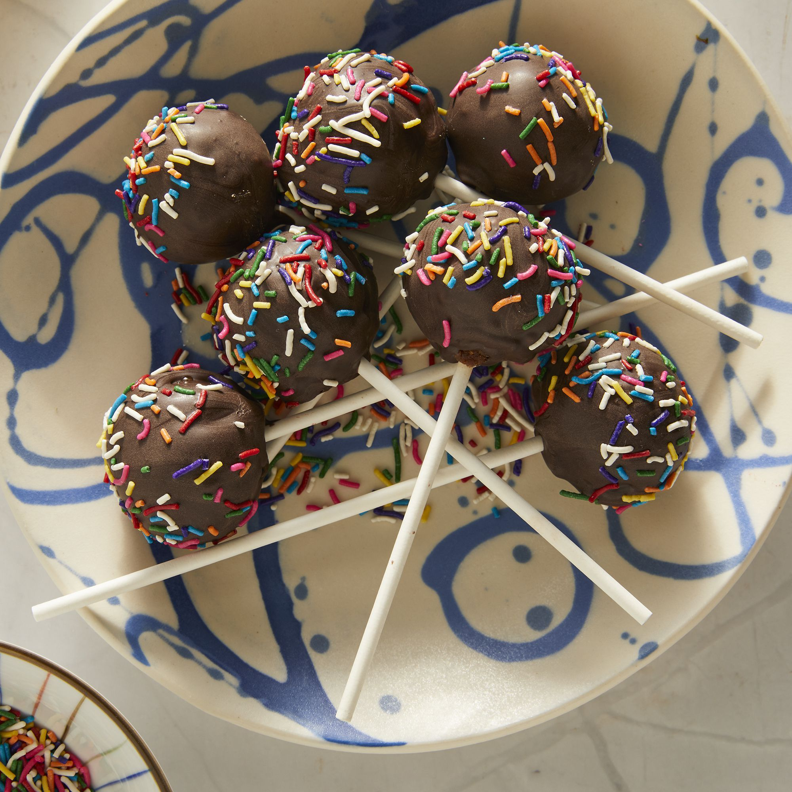

Cake Pop

Description
This cake pop recipe is perfect for birthdays, baby showers, weddings, or any special occasion where sweet treats are needed!
Everyone loves cake pops and this versatile recipe is simple to make with any flavor cake mix or frosting.
Cake pops are nice small bites of dessert instead of large slices of cake or pie.
Ingredients
Prepared cake mix
Chocolate frosting
Lollipop Sticks
Candy melts
Steps
-
Beat cake mix, water, oil, and eggs in a bowl.
Pour batter into baking dish and bake at 350 degree F.
-
After cool, crumble baked cake into a large bowl.
Stir frosting into the bowl, cover, and refigerate until chilled.
Roll mixture into evenly sized balls. Place on baking sheet.
-
Melt candy melts in microwave. Push a lollipop stick into each ball,
dip balls into melted chocolate. Place upright in sytrofoam block to harden.